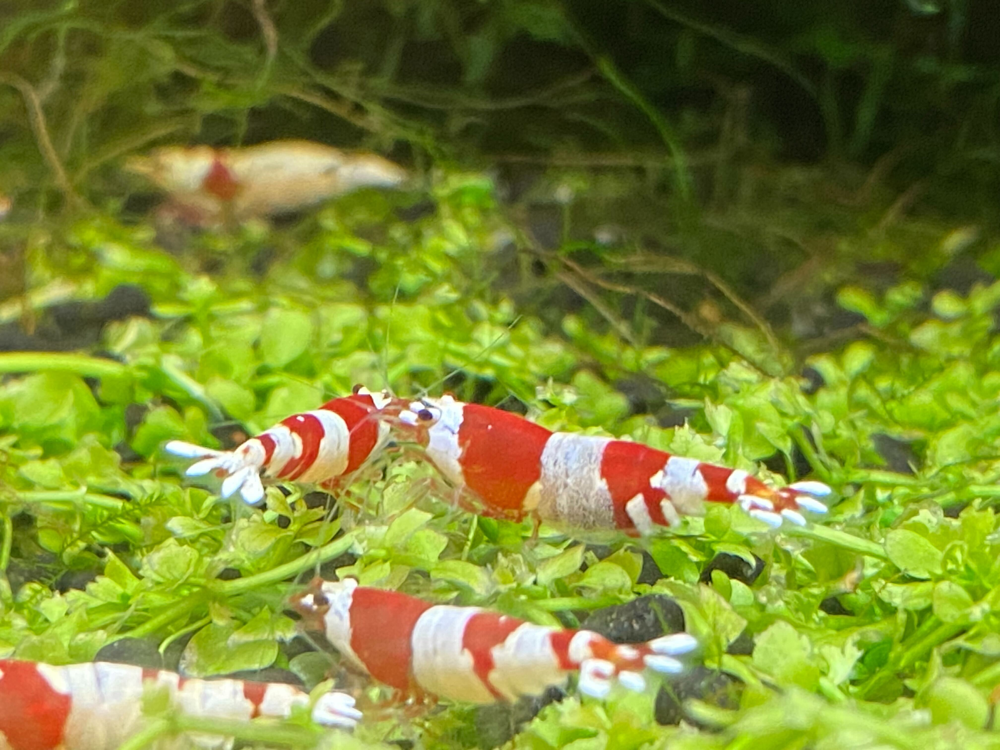
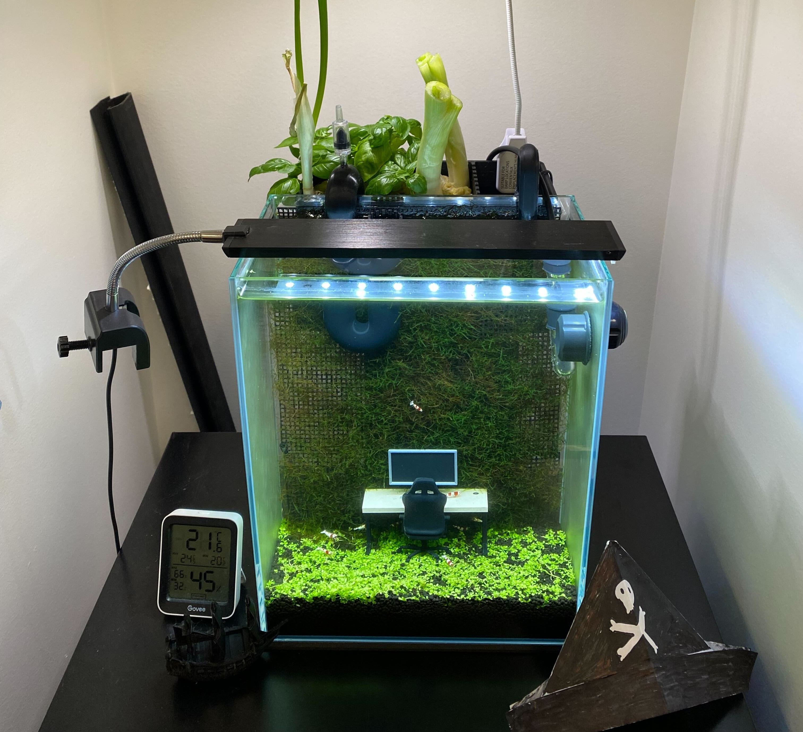
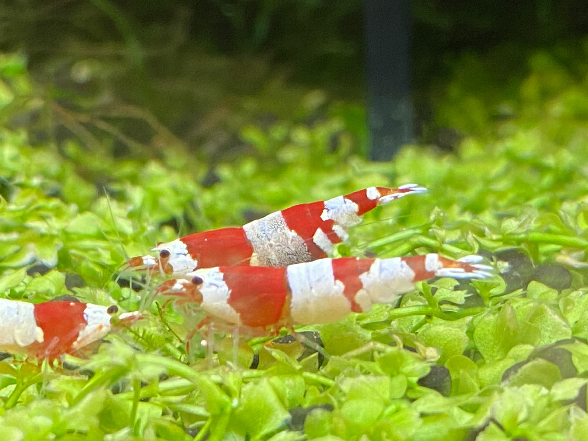

As a long-time aquarium enthsiast, I have always loved my finned and shelley friends.
However, busy schedules in graduate school and a severe allergy for consistently doing water changes has made it difficult
for me to keep a healthy tank. I've played around with building automated aquariums since high school (pet turtle at home, and AutoAquaponics in college),
so I've decided to take advantage of my new EE skills to build a nano shrimp tank that is sleeker and more automated than anything I've done before.
This tank features a colony of high-grade crystal red shrimps, which are notoriously sensitive to water quality and much harder to keep alive than the common cherry shrimp.
I've also grown a carpet of Monte Carlo plants with a Java moss wall for a Severance-inspired scape. The tank was dry-started for 2 months and fully cycled prior to adding shrimps,
and it also has a 3D-printed aquaponic filter with green onions and basils to absorb nitrate. I'm continuously adding more sensors and capabilities to the system, so stay tuned for more!



Enjoy the 24/7 Live Stream. Check Out My Old Tanks Here.